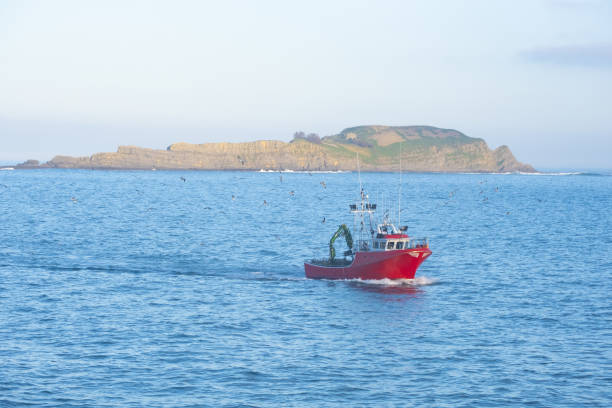

La gastronomía del País Vasco es una de las más ricas y variadas de España. Con una fuerte tradición culinaria, la región ha sabido combinar los productos del mar y de la tierra para crear platos únicos y deliciosos.
Introducción
Orígenes

La cocina vasca tiene sus raíces en la tradición agrícola y pesquera de la región. Desde tiempos antiguos, los vascos han aprovechado los recursos naturales de su entorno, como el pescado fresco del Cantábrico y los productos agrícolas de sus fértiles tierras.
Platos Típicos

Bacalao a la vizcaína

Marmitako

Pintxos
Influencia Moderna

En las últimas décadas, la cocina vasca ha experimentado una revolución gracias a chefs de renombre como Juan Mari Arzak y Pedro Subijana. Estos cocineros han sabido combinar la tradición con la innovación, llevando la gastronomía vasca a nuevas alturas.